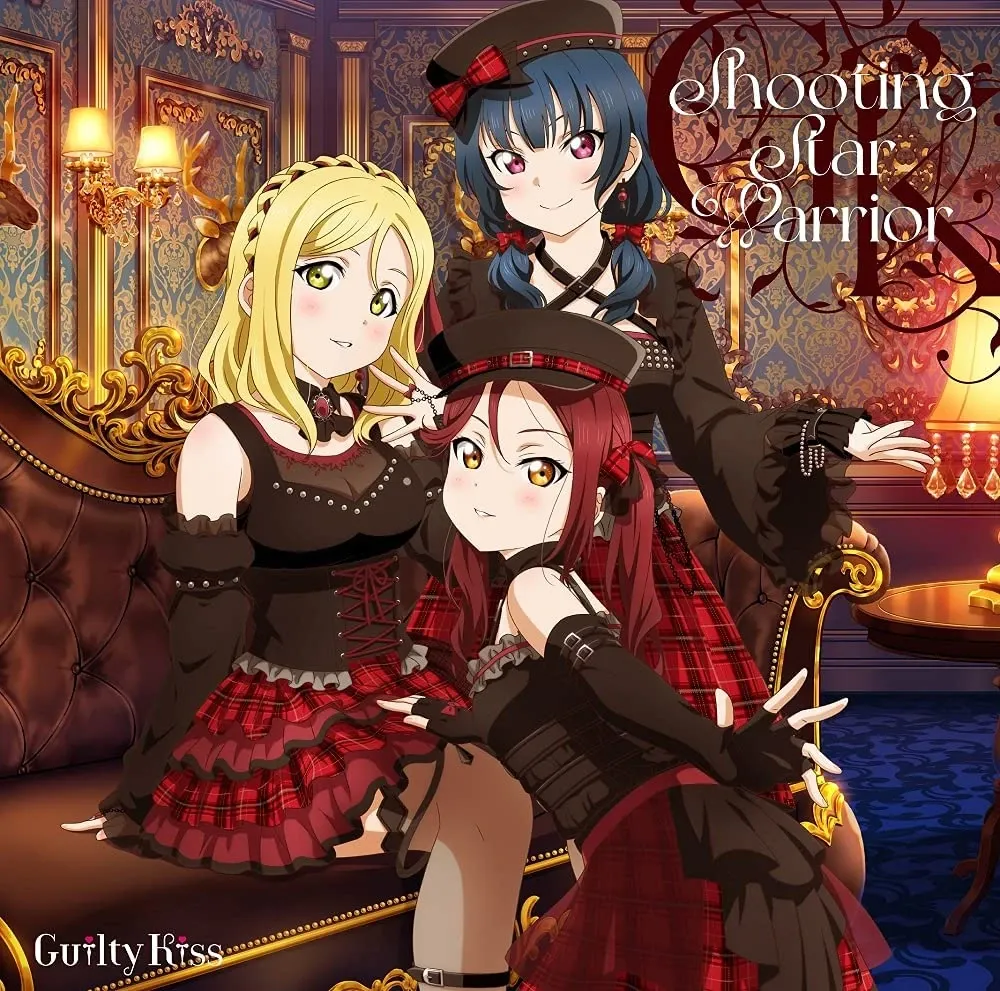

| Guilty Kiss | |
 | |
| 1st Full Album 《#ff1493,#ff1493 Shooting Star Warrior》 |
| ||||
| 데뷔일 | 2016년 6월 8일 (데뷔일로부터 [dday(2016-06-08)]일, [age(2015-06-08)]주년) | |||
| 데뷔 음반 | 2016년 6월 8일 > 틀 포함: 틀:음반 표시 | |||
| 최신 음반 | 2026년 3월 11일 > 틀 포함: 틀:음반 표시 | |||
| 장르 | J-POP, 팝 | |||
| 레이블 | 란티스 | |||
| 링크 |   | |||

1. 소개
요하네 소환!
마리 소환!
리리 소환!
사랑이야말로 모든 것! Guilty Kiss[1][2]러브 라이브! 선샤인!!의 주인공 스쿨 아이돌팀인 Aqours의 3인 서브 유닛 중 하나. 발음을 적자면 길티키스, 약칭으로 길키로 부른다.
유닛명을 정하기 전까지의 가칭은 유닛 C. 조금 어른스러운, 소악마 같은 유닛의 분위기를 생각하여 이러한 유닛명이 생겨났다고 한다. 컨셉은 아티스트 같은 개성파들의 그룹. Aqours 유닛 중 유일하게 lily white, R3BIRTH처럼 전학년이 들어가 있는 유닛이다.[3]
Guilty Kiss의 전용 팬네임은 패밀리아다.
2. 멤버
| Guilty Kiss의 멤버 | ||
 |  |  |
| #fff,#fff 사쿠라우치 리코 | #fff,#fff 츠시마 요시코 | #fff,#fff 오하라 마리 |
3. 음반 목록
틀 포함: 틀:Guilty Kiss의 곡 일람
4. Aqours의 타 유닛들과의 차별점
록 음악을 메인 장르로 사용한 유닛으로, 아쿠아뿐만 아니라 러브라이브 시리즈의 메인 그룹의 서브 유닛 중 록이 메인 장르인 유닛은 Guilty Kiss뿐이다.[5] 가장 대중적인 장르라고 할 수 있는 팝, 하우스, EDM부터 다소 이질적인 전대물 오프닝까지 소화한 바 있다. 이처럼 Guilty Kiss는 소화할 수 있는 장르의 스팩트럼이 상당히 넓다는 평가를 받고 있다.이러한 유닛 특징의 큰 요소를 차지하는 부분은 바로 가창력인데 Guilty Kiss는 Aqours의 세 유닛 중 가창력이 가장 뛰어나다는 평가를 받고 있다. 이미 가창력으로 정평이 난 코바야시 아이카와 스즈키 아이나는 말할 것도 없고 노래가 공개된 후 아이다 리카코가 예상 외로 뛰어난 가창력을 보여주었다. 많이 비교되는 BiBi에는 그나마 분위기 메이커이지만 가창력 최약체가 있었지만 Guilty kiss는 최고 레벨의 가창력만 모아놓고 이 안에 분위기 메이커가 속한 한술 더 뜬 조합이다.
네타 요소개성이 독보적으로 넘치는 데다 이들이 부른 곡들도 록, 하우스 같은 인기를 끌기 쉬운 장르이면서 퀄리티마저 높아 호평받다 보니 Aqours의 세 유닛들 중에서 가장 높은 인기를 구가하고 있다. 1st 유닛 싱글만 해도 발매 일주일 만에 판매량이 3만을 넘겼을 정도다.[6]
라이브에서 분위기를 신나게 만들었던 선배 유닛인 BiBi와 마찬가지로 Guilty Kiss 역시 라이브에서 분위기를 열광적으로 만들 수 있는 유닛으로 꼽혔는데 아쿠아 1st 라이브에서 Strawberry Trapper 무대로 이미 존재감을 크게 알렸다.
5. 기타
 |
| 소악마 의상을 입은 멤버들 |
- 전격 G's Magazine 1월호의 유닛 일러스트 및 소개글에서는 멤버들이 고딕풍 소악마 의상을 입은 모습과 그에 관한 리코의 메시지가 공개되었다. 리코 본인은 이런 의상은 어울리지 않는다는 이야기를 했는데 특히 요시코가 정해 준 대사 "리리의 키스로 당신을 영원히 하인으로 만들어 줄게" 같은 건 절대로 할 수 없다고 하는 모습이 백미다. 일러스트에서 느껴지는 유닛 분위기를 바탕으로 요시코가 무작정 이끌고 마리는 재밌겠다면서 옆에서 거들고 리코는 졸지에 두 사람에게 끌려다니는 포지션일 것 같다고 추측했다. 막상 공개된 유닛 드라마 파트에선 초장부터 하이텐션의 마리가 사건사고(...)를 몰고 다니고 그 분위기에 휘말려 중2병 캐릭터를 고착화시키는 요시코와 그 둘 뒤편에서 끊임없이 고통받는 리코를 볼 수 있었다.
- 전격 G's Magazine 8월호의 유닛 일러스트 및 소개글에서는 멤버들끼리 비 새는 곳에 양동이를 두는 모습과 그에 관한 마리의 메시지가 공개되었다. 여기서 삽입된 일러스트에는 구멍이 숭숭 뚫린 뜰채로 비를 모으겠다며 허당스러운 모습을 보이는 마리와 타천사답게 처량하게 비를 맞고 다니는 요시코의 모습이 실렸는데 혼자서 정상적으로 일을 하며 또다시 고통받는 리코가 눈에 띈다(...).
- 세 유닛들 중 쿨속성에 해당하며 가장 개성이 강하고 멋진 컨셉의 유닛이라는 점에서 BiBi를 잇는 유닛으로 보는 경우가 많다. 붉은 머리의 피아노 치는 작곡 담당과 금발혼혈에 최장신의 3학년 멤버, 그리고 컨셉에 충실한 나르시스트(...)[7]로 구성되어 있다는 점이 같다. 두 유닛 다 라이브에서 분위기를 끌어올리는 일등공신 역할을 하고 있다. BiBi처럼 멤버들의 개인 대사가 들어간 곡을 가진 유닛이기도 하다. 그래서 그런지 양덕들 중에는 BiBi마냥 네타 유닛이 될까 봐 걱정하는 사람들도 적지 않았고 결국 그렇게 되었다.
- 유닛은 아니지만, 전작의 soldier game 트리오인 솔겜조[8]와도 유사점이 많다. 둘 다 각 그룹 가창력 최강 조합인 데다 청순파 캐릭터인 2학년(소노다 우미, 사쿠라우치 리코), 자존심이 센 고양이상 1학년(니시키노 마키, 츠시마 요시코)과 외국계 3학년(아야세 에리, 오하라 마리)으로 이루어졌고, 머리 색깔이 각각 적발(니시키노 마키, 사쿠라우치 리코), 청발(소노다 우미, 츠시마 요시코), 금발(아야세 에리, 오하라 마리)이다. 따져보면 위의 BiBi(러브 라이브!)BiBi보다 이쪽과 더 유사하다고 볼 수도 있다.
- 릴리 화이트와도 구성원에 1~3학년이 모두 있다는 점에서 유사성을 가진다. 멤버 구성에서도 행운과 불운 속성으로 대비되는 점에서 엮이는 오컬트 계열에 관심 많은 멤버(츠시마 요시코, 토죠 노조미), 성실한 청순파인 2학년 리더 보좌(소노다 우미, 사쿠라우치 리코), 그리고 발랄한 하이텐션의 고양이입 멤버(호시조라 린, 오하라 마리)로 유사성을 보인다. 스쿠페스 챌린지 페스티벌에서도 유닛버프를 공유한다.
- 유닛명 후보 중 "소악마 인디비주얼"(일명 소인비)이 있었는데 묘한 이름 때문에 공개 당시 컬트적인 인기를 얻었다. 하지만 Guilty Kiss로 결정되어서 꽤 아쉬워하는 사람들이 많았다고(...). 그래도 Guilty Kiss라는 그룹명도 리코를 고통받게 만들 수 있기 때문에 만족한다는 쪽도 다수(...).
- 한국 팬들이 붙인 별명 중 '번타쾌스'라는 황당한 이름이 있는데 이는 번식의 마리+타천의 요시코+쾌감의 리코를 한 글자씩 따서 만들어진 이름이다. 번식 타천 쾌감에 대한 설명은 각 캐릭터 항목을 참고하자.[9] 다만 요즘은 마리의 번식 메타가 많이 가라앉은 상태라 자주 사용하지 않는다.
- 2016 스쿠페스 감사제에서 마리의 성우인 스즈키 아이나가 스펠링을 Gilty Kiss라고 적어서 화제가 되었다. 안 그래도 마리에게 영어 스펠링을 틀리는 개그 요소가 있었는데 성우마저 그것을 본의 아니게 따라 하게 되었다.[10]
완벽한 성캐일치옆에 있던 아이다 리카코가 바로 정정해 주었는데[11] 드라마 CD에서 마리의 영어 문법 오류를 지적해 주는 역할도 아이다 리카코의 담당 캐릭터인 사쿠라우치 리코라는 점도 재미있다.
- 2016년 대항전까지는 유닛 중 게임 최약체였다(...).[12]
- 앞서 언급했듯이, Aqours의 유닛 중 가장 인기가 많지만 아이러하게도 4집 싱글 센터투표가 끝난 2021년 10월 시점에서 이 유닛의 멤버들만 유일하게 센터가 없다.[13] 하지만 4집 정규 센터 투표가 끝나고 진행한 섀도우버스×스쿠페스 스페셜 콜라보 캠페인 걸 결정전에서는 요시코, 마리, 리코가 차례대로 1, 2, 3위로 상위권을 차지해 커플링곡인 Deep Resonance의 센터가 되었다.
- 2019년 10월 19~20일 개최된 반남페스 2일차에 참가하였다. 캐스트의 과반수가 THE iDOLM@STER 측 캐스트였기에 묻히는 게 아니냐는 우려도 많았지만 무려 6곡을 연속으로 선보이며 회장을 압도해 그 자리에 참여한 수많은 프로듀서를 입럽시켜 버리는 맹활약을 하였다. 라이브가 끝난 후에도 Guilty Kiss의 퍼스트 싱글이 음원차트를 역주행했는데 아마존에서는 903위에서 16위로 떡상하고 온쿄 순위에서 길티키스의 곡이 1, 3, 4, 6위를 차지하는 어마어마한 대박을 쳤다. 트위터 반응도 뜨거웠는데 6곡을 연달아 선보이는 체력과 퍼포먼스의 완성도, 곡의 퀄리티가 찬사를 받으며 트위터 트렌드 6/8위를 차지하였다.[14]
- LoveLive! Series Presents 유닛 고시엔 2024 추첨회에선 에선 리코 역 아이다 리카코가 대표로 나가 "길티 키스의 늪(누마)에 빠뜨리겠다"고 발언했고, DiverDiva 대표였던 미야시타 아이 역 무라카미 나츠미가 "누마즈니까!"라는 농담을 했다.
각주
- [1] 원문은 '愛こそ全て(아이코소 스베테)'. 길티 키스의 멤버 3인방인 코바야시 아이카, 스즈키 아이나, 아이다 리카코의 이름에 사랑(愛)이란 한자와 발음이 같은 아이가 들어가는 걸 적절히 이용한 말장난이다. 다만 스즈키 아이나 & 코바야시 아이카의 이름엔 실제로 愛란 한자가 들어가고 아이다 리카코의 이름엔 발음이 같은 다른 한자인 逢(아이)가 들어가 딱 맞아떨어지는 건 아니다. ↑
- [2] 소개 멘트에서 이름을 부를 때 상대방을 호명한다. 순서가 일정하지 않은 편이다. ↑
- [3] CYaRon!은 3학년이, AZALEA는 2학년이 없다. ↑
- [4] Aqours 내에서 하이텐션 중에 탑 클래스 급으로 노는 스즈키 아이나와 그에 못지 않는 코바야시 아이카 사이에서 조율하며 프로그램을 진행하는 모습을 보면 괜히 맏언니가 아니구나 하는 것을 느낄 수 있다. ↑
- [5] 아쿠아의 라이벌 그룹인 Saint Snow가 길티 키스에 유일하게 비견될 만하며 Cheer for you!!, Maze Town 등의 록 사운드를 소화했던 A·ZU·NA도 있으나 이 유닛은 록이 메인 장르는 아니다. ↑
- [6] 다만 이를 두고 다른 두 유닛보다 인기가 압도적으로 높다고 할 수는 없는데 음반 판매량 자체는 2위인 CYaRon!과 크게 차이나지 않는다. ↑
- [7] 요시코와 니코 모두 이런 기질 탓에 프라이드가 높으며 틈만 생기면
자뻑자화자찬을 하다가 다른 멤버로부터 태클을 받는 면모까지 똑같다. 다만 요시코는 중2병 속성이, 니코는 소악마 속성이 부각된다는 차이점이 있다. 또한 애니 이전에는 니시키노 마키가 이런 속성을 가지고 있었으며, 니코는 애니 이전에는 요시코처럼 다른 사람에게 자주 태클을 맞지 않았으며 오히려 여유로운 성격에 당하는 일이 별로 없었다. ↑ - [8] 마키우미에리 ↑
- [9] 러브라이브 선샤인 마이너 갤러리에서 탄생한 별명. ↑
- [10] 틀린 것을 확인하고 상당히 당황했던 것을 보아 직접 의도한 바는 아닌 듯하다. ↑
- [11] 이쪽은 어린 시절 미국에서 거주한 적이 있다. ↑
- [12] 2017년 대항전에서는 스쿠페스 챌린지에서 가장 어려운 곡을 플레이했음에도 제일 좋은 성적을 냈다. ↑
- [13] 요시코 같은 경우는 3집, 4집 모두 중간발표는 1위를 차지했지만 최종에서는 아깝게 2위가 된다. 리코는 3등 - 4등 - 5등으로 중-상위권에서 머물고 있고, 마리도 3집까지 하위권이었으나 4집에서는 극장판 보정 덕분인지 최종 4위로 올라갔다. ↑
- [14] 가타카나 '기루키스' 검색과 영어 'Guilty Kiss' 검색이 동시에 트위터 트렌드에 올랐다. ↑
- [15] Printemps에서는 호노카, lily white에서는 린, BiBi(러브 라이브!)에서는 니코, CYaRon에서는 치카와 요우, AZALEA에서는 카난, DiverDiva에서는 카린, QU4RTZ에서는 카스미가 바보이다. 초기 설정까지 따지면 lily white에서는 노조미, CYaRon에서는 루비까지 포함. ↑